Hardware
The Hardware part of the Positioning Engine Web Console's status panel shows a variety of telemetry and monitoring options for both the hardware and the network. These will help to assess system health, troubleshoot any issues that may arise and keep unwanted and unexpected downtime to a minimum.
This section will go through the different indicators and how to use the action buttons associated with them (if applicable).
Locators Online
This indicator shows how many of the Locators in the system are online, connected to the network and running as they should, i.e. how many Locators can be "seen" by the QPE. This indicator will also show if other Locators, such as Focusing Locators are currently connected.
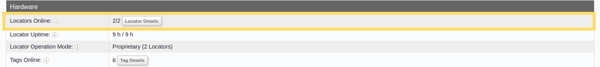
For more detailed information about specific Locators (e.g. for troubleshooting purposes) click on the Locator Details button on this row.
The Web Console retrieves this information from the QPE using the Get Locator Information API method.
Locator Uptime
This indicator shows how long the Locators have been up and running. The numbers indicate the minimum and median uptime for the Locators (minimum/median). You can use this indicator to identify whether some Locators in the network are power cycling and not remaining online.
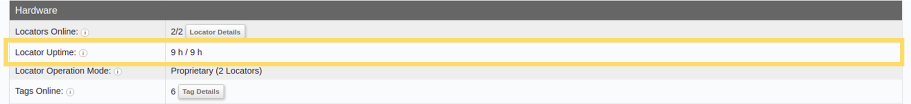
Once you have established that there is an issue, you can use the Locator Details table to identify which Locators specifically are having problems remaining online.
The Web Console retrieves this information from the QPE using the Get Locator Information API method.
Locator Operation Mode
This indicator displays the operation mode of the Locators. The available options are either BLE mode (using standard BLE channels) or proprietary mode (using Quuppa's proprietary channels). You can use this indicator to help troubleshoot air interface load issues.
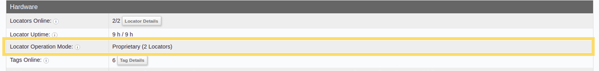
The Web Console retrieves this information from the QPE using the Get Locator Information API method.
Tags Online
This indicator shows the number of tags that are online (i.e. "seen" by the system) and will show a warning if the battery life of some of the tags is coming to an end. The count includes all of the tags that have been visible to the system in the last 60 seconds.
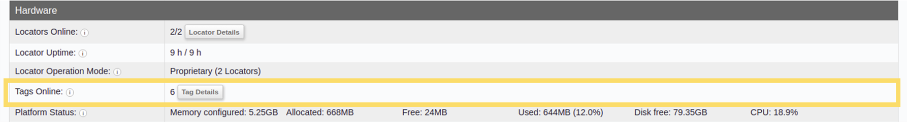
You can use the Tag Details table to identify which tags specifically need to be replaced.
The Web Console retrieves this information from the QPE using the Get Locator Information API method.
Platform Status
This indicator helps identify whether the system has enough memory and whether the CPU is overloaded. If the memory used is approaching 80 % or more, it may be time to consider allocating more memory or otherwise investigating why so much memory is being used.
To allocate more memory, you can use the Java Virtual Machine startup parameters to change the configuration for the computer running the QPE.
If optimising the memory use doesn't solve the problem, you might also consider upgrading the QPE machine. To do so, use the Quuppa Site Simulator (QSS) to scope the requirements for your deployment and refer to the QPE Hardware Recommendations document to help you select new hardware.
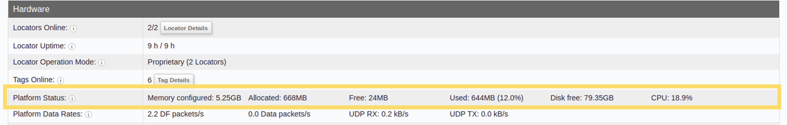
The Web Console retrieves this information from the QPE using the Get Positioning Engine Information API method.
Platform Data Rates
- DF packets/s - the number of Direction Finding (DF) packets received by the QPE per second.
- Data packets/s - the number of data packets (e.g. sensor data) received by the QPE per second.
- UDP RX - the amount of data in kilobytes per second received by the QPE from the Locators.
- UDP TX - the amount of data in kilobytes per second sent out from the QPE as UDP push.
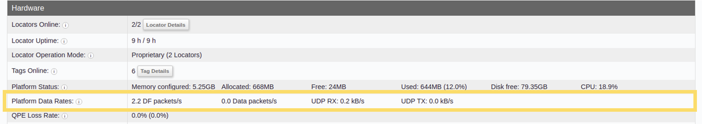
The Web Console retrieves this information from the QPE using the Get Positioning Engine Information API method.
QPE Loss Rate
This indicator shows the percentage of received packets that the QPE didn't have time to process. It will help you to assess how effectively your QPE is processing the received packets. Typically, if this indicator shows high levels of packets being lost, then the QPE machine is not able to handle the generated load. In these cases, you should consider upgrading your QPE machine.
You can use the Quuppa System Simulator to better scope the requirements for the QPE machine and check out QPE Hardware Recommendations document to help you select suitable hardware for your deployment.
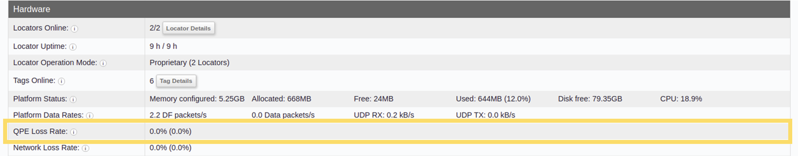
The Web Console retrieves this information from the QPE using the Get Positioning Engine Information API method.
Network Loss Rate
This indicator will help identify whether packets are being transmitted successfully from the Locators to the QPE. If this indicator shows 0 % network loss rate, then the system is running optimally and packets are being successfully transferred to the QPE. However, in deployments with more complicated networks, it is quite common that a small portion of packets are lost along the way. As a general rule, if this indicator level is below 1 %, the network is performing well.
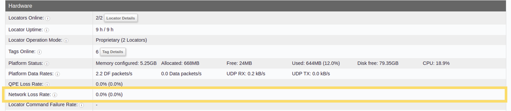
The Web Console retrieves this information from the QPE using the Get Positioning Engine Information API method.
Locator Command Failure Rate
This indicator shows what percentage of Locator commands are failing. This is helpful for identifying connection issues that may be preventing the QPE from communicating with the Locators, even if the QPE is receiving packets from the Locators. A 0 % failure rate means no Locator commands are failing and the system is running optimally from this perspective.
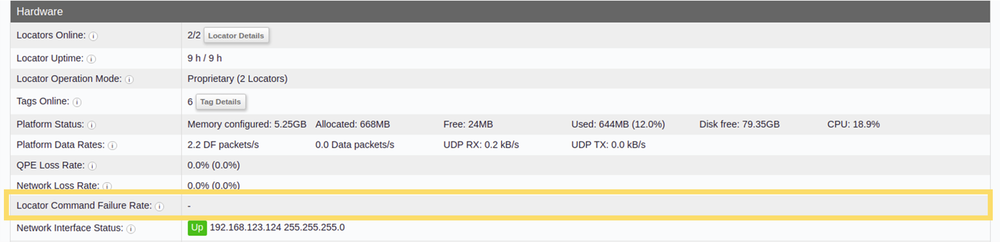
The Web Console retrieves this information from the QPE using the Get Positioning Engine Information API method.
Network Interface Status
This indicator shows the status of the network interface connected to the Locators. The options are Up for when the connection has been established and Down for when the connection has been lost. This row will also display the IP addresses for the relevant interfaces if a connection has been made.
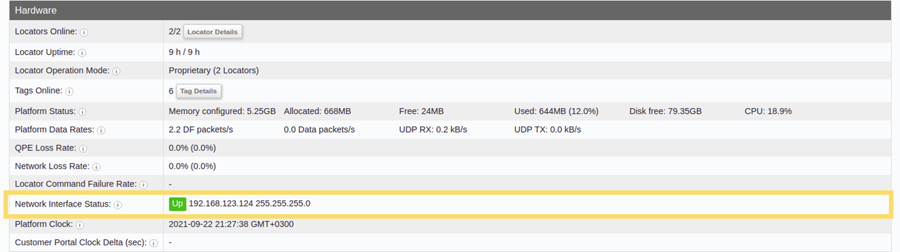
The Web Console retrieves this information from the QPE using the Get Positioning Engine Information API method.
Platform Clock
This row shows the local time (or clock) for this QPE machine. Sometimes, e.g. if the system is not online, this clock may slip slightly. It is important to manage the QPE clock to make sure that it's in sync with Coordinated Universal Time (UTC) as the QPE clock must be synced to within one minute of the Quuppa Customer Portal's clock for the QPE to successfully synchronise the project and license files. To ensure that the two clocks remain aligned, we recommend that you configure a Network Time Protocol (NTP) service.
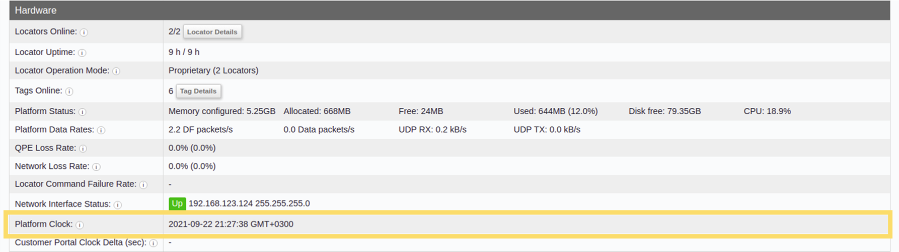
The Web Console retrieves this information from the QPE using the Get Positioning Engine Information API method.
Customer Portal Clock Delta (sec)
This row shows the time (or clock) for the Quuppa Customer Portal. The QPE clock must be synced to within one minute of the Quuppa Customer Portal's clock for the QPE to successfully synchronise the project and license files. To ensure that the two clocks remain aligned, we recommend that you configure a Network Time Protocol (NTP) service for the platform clock.
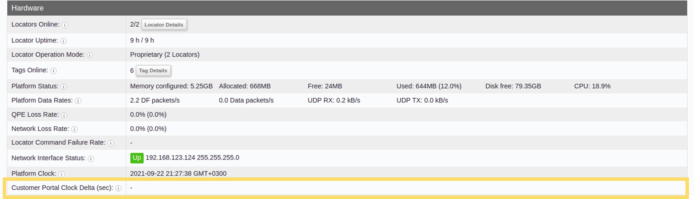
The Web Console retrieves this information from the QPE using the Get Positioning Engine Information API method.